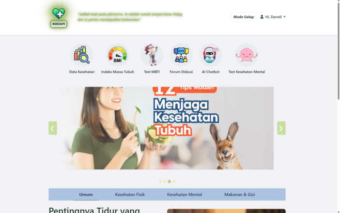

Data science
Cardiovascular Data Modelling
How much do blood pressure, age, and cholesterol tell us about cardiovascular disease in this dataset?
Read case studyAspiring Data Analyst / Information Systems
Hi, I am William Eka Saputra, an Information Systems student at Universitas Multimedia Nusantara with a strong interest in Data Analytics and Data Science. I am passionate about using data and technology to solve problems, uncover meaningful insights, and support better decision-making. With a foundation in Python, MySQL, Microsoft Excel, and ERP, I am eager to gain practical experience, contribute to meaningful projects, and learn from professionals in the data and technology fields.
How much do blood pressure, age, and cholesterol tell us about cardiovascular disease in this dataset?
Read case study
A Windows library application that connects loans and returns to stock counts and reports.
Read case study====== Welcome to DigiShelf ====== 1. Register 2. Login 3. Continue as Guest 0. Exit
A console-based library project exploring how to track books, waiting lists, and study room requests.
Read case study
User flows and a relational database for a health education website with personal profiles and community forums.
Read case studyExploring weekly sales patterns and building a 30-day forecast from retail transactions.
Read case studyI processed payments throughout the 32-day Jakarta Fair Kemayoran and coordinated with teammates to keep queues moving during busy shifts.
I helped students work through purchasing, sales, and accounting exercises in SAP S/4HANA. I also prepared lab materials and helped troubleshoot issues during practical sessions.
I guided incoming Information Systems students through orientation, coordinated group activities, and introduced students to the programme and campus.
I’m interested in how people use data to make everyday decisions. Building a retail forecast taught me to look for patterns across weeks. In the ERP lab, I saw how a purchase or sale becomes a record that other teams rely on.
Science Major (IPA)
I was a member of the Student Council (OSIS) in the Information and Technology division and participated in basketball extracurricular activities.
I’m looking for a data analytics internship. You can reach me by email or on LinkedIn.